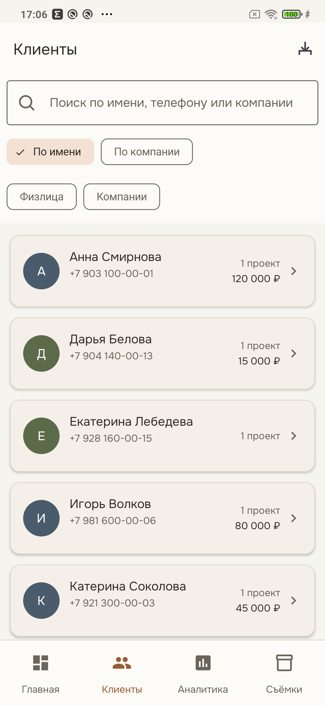
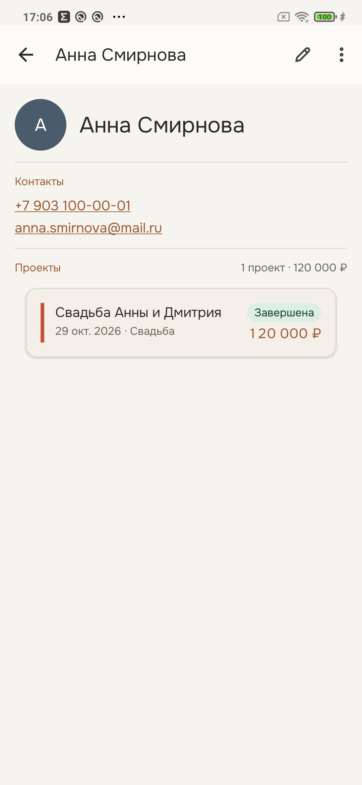
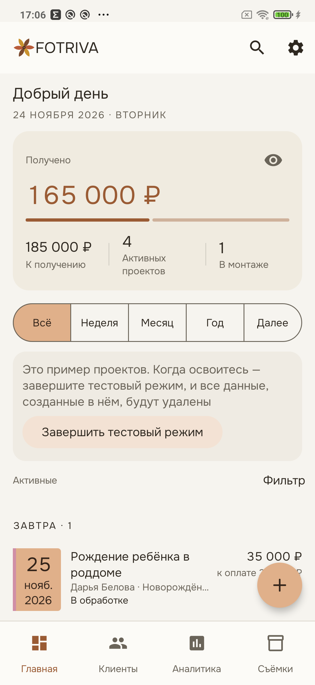
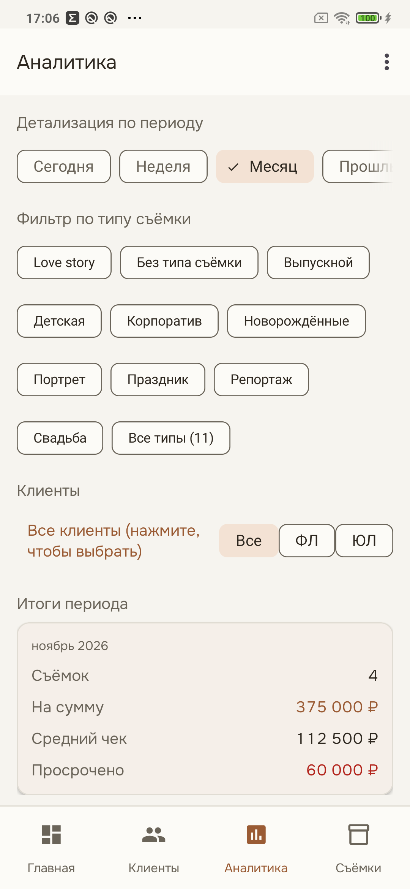
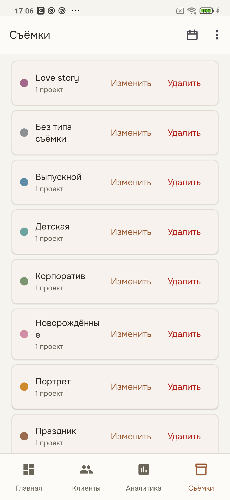
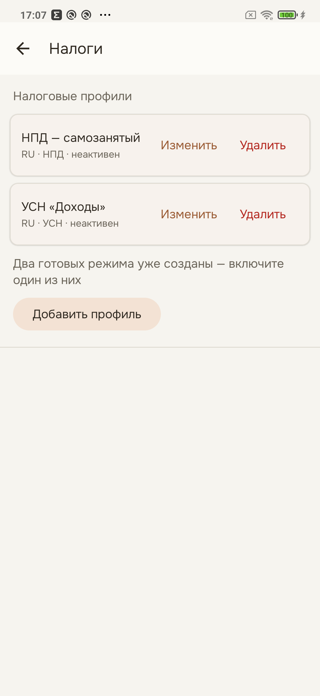
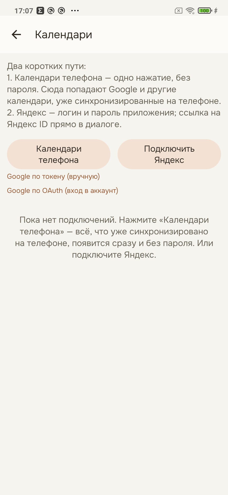

Фокус
Фокус — это кадр, который вы поймали, и проект, который вы ведёте. Приложение держит фокус на съёмке: клиент, дата, место, предоплата и остаток лежат рядом и не теряются между «договорились» и «отдали фото».
Офлайн-CRM для фотографа
Съёмки, клиенты, деньги и налоги — в одном приложении, как в бумажном журнале, но считает само. Без аккаунта, без интернета, без подписки: данные только на вашем телефоне.
Бесплатно 30 дней Разовая оплата — навсегда Работает офлайн
Прототип приложения — настоящий, не картинка. Нажмите и потыкайте:
Бренд
Три плитки в иконке — не украшение, а обещание продукта: одна съёмка, три слоя учёта, ваши данные. Читается просто: фокус — три — ваши.
Фокус — это кадр, который вы поймали, и проект, который вы ведёте. Приложение держит фокус на съёмке: клиент, дата, место, предоплата и остаток лежат рядом и не теряются между «договорились» и «отдали фото».
Три — это три слоя учёта: съёмка → деньги → налоги. Ровно три вещи, которые фотограф держит в голове, а потом забывает. В FOTRIVA они связаны: оплата по съёмке сразу попадает в налог.
Ваши — ваши клиенты, ваши деньги, ваши налоги. Только на вашем телефоне: без аккаунта, без серверов, без облака, в которое кто-то может заглянуть.
Треугольник FOTRIVA
Фотографу этот треугольник знаком по камере: ISO, выдержка, диафрагма — три значения, из которых рождается кадр. В FOTRIVA тот же треугольник доезжает до конца съёмки: съёмка → деньги → налоги. Это ровно те три слоя, которые он держит в голове, а потом забывает — и здесь они связаны в одном проекте.
Сняли кадр — в тот же проект сразу падает предоплата. Получили оплату — сразу считается налог. Треугольник не надо держать в голове: он живёт в приложении.
Возможности
Никаких техно-дашбордов: интерфейс как страницы бумажного журнала — понятно с первого открытия.
Статусы: назначена → в обработке → в монтаже → завершена. «Планируется» появляется только у проектов, импортированных из календаря, а отменить проект в приложении нельзя. У съёмки есть время начала и время окончания. Вехи таймлайна вы добавляете сами — своих названий и дат, готового шаблона в приложении нет.
Импорт из записной книжки телефона — отмечаете нужные контакты, и они попадают в справочник; «Очистить контакты» убирает тех, у кого нет съёмок. Клиента можно добавить из мессенджера — приложение разберёт ссылку и запомнит канал: WhatsApp, Telegram, Instagram, ВК, МАКС, а ещё телефон и «другое». История съёмок и суммы — в один тап.
Журнал операций: оплаты, возвраты, аннулирование — деньги в журнале не удаляются. Этапы оплаты с распределением платежей по этапам. Расходы внутри проекта: такси, печать, подрядчик — затраты фотографа, в «Получено» и в налоговую базу они не входят.
НПД, УСН, ОСНО + НДС — а также ПСН, АУСН и УСН+НДС. Расчёт за любой период. Блок «чеки НПД» — внутри ежедневного уведомления: оплаты за последние 7 дней (возвраты в подсказку не попадают).
Яндекс.Календарь (логин и пароль приложения) и Google Calendar: события импортируются в проекты, проекты выгружаются обратно. Синхронизацию запускаете вы — по кнопке.
Доход по месяцам, средний чек, доля полученного, фильтры по видам съёмки, по клиентам и по типу клиента. «Итоги периода»: съёмки, средний чек, просрочено — за день, неделю, месяц, квартал или год.
Файл .fotrivabak. Можно задать пароль — тогда данные шифруются AES-256-GCM, старый телефон не нужен. Без пароля файл остаётся открытым, и приложение об этом предупредит. Автобэкап в выбранную папку, хранятся 5 последних копий.
Без аккаунта и серверов разработчика: база лежит на телефоне. Маска денег (переключатель в настройках, кнопка-глаз на главной) и запрет скриншотов на экранах с персональными данными.
Одно ежедневное уведомление с тремя блоками: съёмки завтра, висящий монтаж (14 дней и дольше) и чеки НПД. Каждый блок включается и выключается отдельно в настройках.
Деньги не пропадают: возврат ссылается на исходную оплату, восстановление из копии умеет заменить данные или слить их с текущими. Демо-режим выключается одной кнопкой и чистит всё.
Без макетов
Снимки сделаны на телефоне с установленной сборкой — не рендеры и не макеты. Тот же интерфейс, что вы листаете в прототипе выше.







Снято на Xiaomi Mi 9 (Android 10), сборка 1.1.14. Ничего не приукрашено: суммы в демо-примере — те же, что показывает приложение.
Расчёт
Впишите полученные деньги за период и выберите режим. Формула та же, что внутри приложения, — вместе с честной оговоркой к каждому режиму.
Ориентировочно к уплате
—
с базы —
на руки —
Расчёт — ориентир, а не готовая декларация: в форме нет вычетов, страховых взносов и минимального налога. В приложении налог считается по вашим периодам и фактическим оплатам — это точнее.
Как работает
Установите приложение и работайте 30 дней без ограничений — без регистрации и банковской карты. После этого приложение останется открытым для чтения, пока не введён ключ.
Android 8+Письмом или переводом. Перед оплатой отправьте нам код устройства из приложения («Настройки → FOTRIVA Pro») — мы выпустим ключ именно на этот телефон или планшет. Нужно больше одного устройства — пришлите коды с них тоже.
Вся функциональность разблокируется навсегда — без подписки и продлений. Ключ работает на тех устройствах, для которых он выдан.
Настройки → FOTRIVA ProСравнение
Все три варианта «работают». Разница — в том, сколько времени и нервов стоит вам каждый из них.
| Задача | Бумажный журнал | Excel / таблица | FOTRIVA |
|---|---|---|---|
| Съёмки и статусы | Есть | Есть | Есть, с напоминанием |
| Клиенты, телефоны, история | Неудобно искать | Есть | Есть, поиск и фильтры |
| Кто и сколько должен | Считать вручную | Считать формулами | Считает само |
| Налоги НПД / УСН / ОСНО | Нет | Вручную, каждый раз | Считает само, за любой период |
| Напоминания | Нет | Нет | Съёмки, висящий монтаж, чеки НПД |
| Работает без интернета | Есть | Нет | Есть, кроме календарной синхронизации |
| Данные только у вас | Есть | В облаке Google | Есть, без аккаунта и серверов |
| Цена | 0 ₽, но время | 0 ₽, но время | Разовая оплата, без подписки |
Честная оговорка: интернет нужен только календарной синхронизации — всё остальное работает офлайн. Там, где FOTRIVA считает налог, это ориентир по ставке режима, а не готовая декларация.
Кому подходит
Если съёмки приносят доход, а не только удовольствие — журнал нужен с первого же клиента.
Съёмки в разных городах, предоплаты и остатки. Главное — не потерять оплату и не перепутать дату. Приложение напомнит про съёмку и про висящий монтаж.
Много имён, много съёмок. Для вас важна история по каждому человеку: кто был, когда и сколько заплатил. Импорт из записной книжки — чтобы не вбивать телефоны руками.
Счета по безналу, акты и отчётность. Нужен аккуратный учёт до рубля и напоминание о чеке НПД по оплатам за последние семь дней.
Тариф
Разовая оплата, без подписки; стоимость уточняйте письмом.
Одна оплата — навсегда Стоимость уточняйте письмом — мы вышлем счёт или реквизиты перевода.
Без подписки. Без аккаунта. Без серверов. Налоги, календарь, бэкапы и аналитика работают и без ключа.
Купить ключ0 ₽ 30 дней с первого запуска — без регистрации и карты.
После 30 дней приложение не закрывается: данные видны и читаются, но создавать и менять их нельзя, пока не введён ключ.
Скачать для AndroidПокупка
Онлайн-оплата подключается отдельно; сейчас счёт выставляется письмом — это займёт пару минут.
На fotriva@yandex.ru с темой «Покупка FOTRIVA Pro» — укажите имя и e-mail, на который придёт ключ.
Пришлём счёт или реквизиты перевода — как вам удобнее оплатить.
После оплаты на указанный e-mail приходит персональный ключ активации.
Имя и e-mail из заявки используются только для выставления счёта и доставки ключа. Подробнее — в политике конфиденциальности.
FAQ
Нет. FOTRIVA полностью офлайн: проекты, клиенты, деньги, налоги и аналитика работают без сети. Интернет нужен только для синхронизации с Яндекс.Календарём или Google Calendar — и только тогда, когда вы её запускаете. По вашему запросу приложение ещё может проверить список отозванных ключей и наличие новой версии (обычный запрос одного файла, без ваших данных) — если сети нет, используются списки, встроенные в сборку.
Новая сборка всегда появляется на сайте. Обновиться можно двумя способами: скачать APK со страницы «Скачать» и открыть его (Android поставит сборку поверх старой, данные и лицензия останутся на месте) или прямо из приложения — «Настройки → Обновления»: приложение проверит сайт и предложит скачать и поставить обновление. Само по себе обновление не приходит и навязывается: только когда вы его запросите.
Ключ выдаётся на конкретные устройства: по умолчанию на одно, по вашей просьбе — на два или три (например, телефон и планшет). Приложение показывает код устройства («Настройки → FOTRIVA Pro»), вы отправляете его при заказе, и ключ работает только на перечисленных устройствах.
Да. Продавец может отозвать выданный ключ: приложение сверяется со списком отозванных ключей при активации и при открытии экрана FOTRIVA Pro. Ваши данные при этом не удаляются — приложение просто возвращается на бесплатный тариф, где всё видно, но создавать и менять нельзя.
Приложение не закроется и данные останутся на месте. Оно продолжит показывать проекты, клиентов, деньги и налоги — просто создавать и менять их станет нельзя, пока не введён ключ Pro. Данные при этом никуда не деваются.
До 10 проектов всего — в счёт идут и завершённые, и отменённые. Демо-примеры в этот лимит не входят. С ключом Pro ограничения нет.
Только на вашем телефоне — ни аккаунта, ни серверов разработчика. Резервную копию .fotrivabak можно защитить паролем: тогда она шифруется AES-256-GCM и вскрыть её можно на любом устройстве, имея файл и пароль. Без пароля файл остаётся открытым — приложение предупредит об этом при создании копии.
Да. Регистрация не нужна: приложение открывается сразу после установки, данные лежат в локальной базе на устройстве. Заглянуть в них не может никто, кроме вас.
Так работает интерфейс: проекты, статусы и оплаты выглядят как страницы рабочего журнала, а не как техно-дашборд. Разделы те же, что в приложении: Главная, Клиенты, Аналитика, Съёмки.
Яндекс.Календарь подключается по логину и паролю приложения, Google Calendar — через календарь телефона или свой access-токен. События из календаря импортируются в проекты галочками, а проекты можно выгрузить обратно. Живой двусторонней синхронизации «на ходу» нет: её запускают вручную.
Сейчас FOTRIVA доступна на Android 8 и новее. Версия для iOS не анонсирована.
Нет, обновления бесплатны. Новые версии выкладываются на этом сайте: скачайте APK и поставьте поверх старого — база, ключ и настройки сохранятся. Автоматического обновления в приложении нет, поэтому ставьте сборки сами.
Да. Напишите письмо в течение 14 дней после оплаты — вернём оплату. Ключ проверяется офлайн и не привязан к устройству, поэтому вернуть его можно без долгих выяснений.
Создайте резервную копию и перенесите файл .fotrivabak на новое устройство. Если копии защищены паролем, нужен и пароль — старый телефон не требуется. Восстановление умеет как заменить данные, так и слить их с текущими.
Скачать
Установите сборку и работайте 30 дней без регистрации и карты. После этого приложение останется открытым для чтения, пока не введён ключ.
Файл сборки лежит на сайте: кнопка ниже включится сама, как только файл появится по адресу downloads/FOTRIVA-1.1.17.apk. Если её нет — напишите, и мы пришлём сборку письмом в тот же день. Новую версию можно ставить поверх старой: база, ключ и настройки сохранятся.
Проверяем наличие файла…
В RuStore и Google Play приложения пока нет. Как только выйдет — кнопка появится здесь сама.